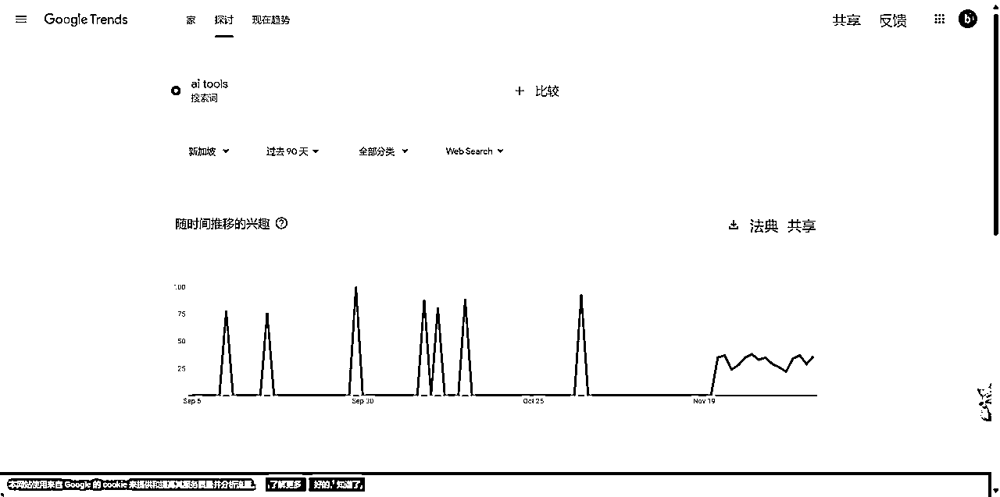
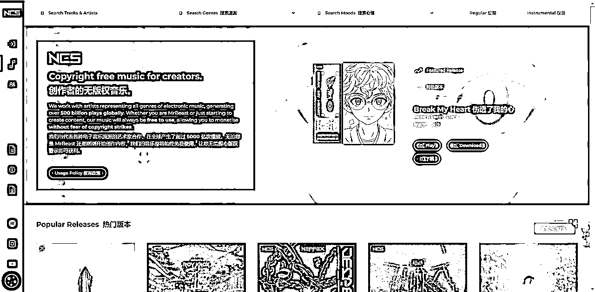

来源：https://dvsjtc6ey3f.feishu.cn/docx/CZwhdVGXJoeWWVx9cTqcpPWRnYb
大家好，我是汤姆CC，这是我首次发长篇帖子，如有不足之处，还请大家多多包涵。我目前是大三计算机专业的学生，热衷于探索各种网站、软件与资源，尤其对AI领域充满兴趣，时常沉迷于各类AI工具的研究与尝试。
一天早上刚睁开眼，就看到我彭哥（老彭）的消息，原来是我发的那条风向标引起了他的兴趣。他问我有没有什么特别之处，我一边揉着眼睛一边跟他说“没有啥特别之处”。聊着聊着，我们的对话就从风向标跳到了做一个YouTube工具合集的话题。彭哥鼓励我说：“你应该试试做个大合集！”于是，我就开始了这场工具整理之旅。这次整理工具箱花了两天时间，期间浏览了一百多个网站，整理了30多个很有用的工具，感觉自己都快变成工具专家了。最终，完成了这篇工具箱，希望能给大家带来些实际帮助。如果你们也有好用的YouTube工具，欢迎在评论区分享，一起让这个工具箱更强大！
本篇文章将工具按照以下几大类进行整理：热门爆款的选题挖掘工具、频道对标挖掘工具、关键词挖掘与SEO工具、频道分析工具、频道收益分析工具、内容创作工具、以及下载工具。
工具名称：piped
关键词：YouTube趋势、热门视频、无广告观看
地址：https://piped.kavin.rocks/trending
主要作用：Piped 是一个开源的第三方YouTube客户端，它的“Trending”页面可以让用户查看当前YouTube上的热门趋势视频，且无需广告干扰。对于YouTube创作者来说，它是一个轻量级工具，用于发现趋势内容
使用场景：1.快速浏览YouTube上的当前热门视频，寻找灵感或研究观众关注的话题。 2.根据热门内容和趋势规划自己的视频主题，紧跟潮流，吸引更多观众。 3.查看同领域创作者的热门视频，分析其成功的标题、标签和内容策略。
工具名称：YewTube Trending
关键词：YouTube趋势
地址：https://yewtu.be/feed/trending?type=Default®ion=US
主要作用:YewTube 是一个开源的、隐私友好的第三方YouTube客户端，通过“Trending”页面，用户可以查看美国地区的YouTube热门趋势视频，并在无广告干扰的环境下播放。对于YouTube创作者而言，这是一个了解热门内容、获取灵感的绝佳平台
使用场景：1.快速了解美国地区YouTube的当前热门视频，为创作提供方向和灵感。 2.研究热门视频的标题、缩略图设计和内容结构，优化自己的创作策略。 3.浏览多样化的热门内容，发现观众感兴趣的主题并计划相关的视频创作。
工具名称：Tubefilter
关键词：YouTube新闻、创作者资源、行业趋势
地址：https://www.tubefilter.com/
主要作用：Tubefilter 是一个专注于在线内容创作者和数字视频行业动态的平台。它提供关于YouTube和其他社交媒体平台的新闻、分析和资源，帮助创作者了解行业趋势、学习成功案例并获取创作灵感。
使用场景：1.了解YouTube及数字内容领域的最新新闻和变化，例如算法更新、政策调整等。 2.从热门创作者的成功故事或趋势报道中获取视频创意和创作思路。 3.学习关于广告、品牌合作和内容变现的最新策略，提高频道收益。 4.发现新兴的创作者工具或资源，优化视频制作和运营效率。
工具名称：Exploding Topics
关键词：关键词研究、内容趋势、SEO优化
地址：https://explodingtopics.com/blog/top-youtube-searches
主要功能：Exploding Topics 的“Top YouTube Searches”页面提供了最新和最受欢迎的YouTube搜索关键词和话题。这对于YouTube创作者来说，是了解观众兴趣、优化SEO和创作热门内容的重要工具，可以帮助他们提高视频的搜索排名和观众参与度。
使用场景：1.根据高搜索量的关键词，创作相关内容，吸引更多目标观众。 2.利用热门关键词优化视频标题、描述和标签，提升搜索曝光率。 3.发现正在增长或突然爆红的话题，抢占趋势流量。 4.分析不同类别的关键词，了解观众的搜索行为，为未来视频提供创作方向。 5结合关键词数据，研究竞争对手的视频表现，优化自己的内容策.略。
来源：https://scys.com/articleDetail/xq_topic/2858454458255211
工具名称：TASTYEUTTS
关键词：YouTube选题、CPM
地址：https://www.tastyedits.com/most-profitable-youtube-niches/
主要功能：根据CPM（每千次展示成本），以下是2024年最赚钱的15个YouTube领域，其中在线赚钱策略、数字营销和个人财务投资位列前三。选择YouTube领域是决定你频道成功的关键因素，它影响你的受众和品牌合作机会。赚钱的YouTube领域取决于多个因素，包括领域选择、变现策略、观众参与度、内容质量和视频长度。
来源：https://scys.com/articleDetail/xq_topic/2858454458255211
工具名称： FindAChannel
推荐指数：⭐⭐⭐⭐⭐
网站标签： YouTube 频道发现、网红营销、SEO 工具、内容创作者资源
工具地址：https://www.findachannel.net/
主要作用： FindAChannel 是一个专为发现和分析 YouTube 频道而设计的平台。用户可以浏览或搜索超过 198,000 个独特的 YouTube 频道，查看频道的订阅者数量、视频总数、总观看次数等详细信息。平台还提供估算频道潜在收入的功能，帮助用户评估频道的商业价值。此外，FindAChannel 提供 YouTube SEO 工具，如频道创意生成器、视频标题生成器和 4000 小时观看时间计算器，协助内容创作者优化其频道内容并提高可见度。
使用场景： 它可以帮助用户发现潜在的合作伙伴或竞争对手，深入了解特定领域的 YouTube 频道表现。通过平台提供的 SEO 工具，用户可以优化自己的频道内容，提升在 YouTube 上的曝光度和影响力。此外，平台的网红搜索功能使用户能够找到适合推广其产品或服务的影响者，促进业务增长。
工具名称：SimilarChannels
网站标签： YouTube 频道发现、相似频道推荐、社区驱动
工具地址：https://similarchannels.com/
主要作用： SimilarChannels 是一个帮助用户发现与特定 YouTube 频道相似的其他频道。用户可以通过搜索特定频道，获取与之内容相似的频道推荐。
使用场景： 它可以帮助用户发现潜在的合作伙伴或竞争对手，深入了解特定领域的 YouTube 频道表现。通过平台提供的推荐功能，用户可以找到与自己兴趣或业务相关的频道，获取灵感或寻求合作机会。
工具名称： Favoree
网站标签： YouTube 频道发现、频道评价、内容推荐、用户评论
工具地址：https://www.favoree.io/
主要作用： Favoree 是一个专为发现和评价 YouTube 频道的平台，用户可以通过详细的过滤器（如主题、类型、情绪、评分、平均视频长度等）搜索和发现新的 YouTube 频道。 此外，用户可以对频道进行评分和评论，分享他们的观看体验，从而帮助其他用户找到优质内容。
使用场景：它可以帮助用户发现潜在的合作伙伴或竞争对手，深入了解特定领域的 YouTube 频道表现。 通过平台提供的推荐功能，用户可以找到与自己兴趣或业务相关的频道，获取灵感或寻求合作机会。
工具名称：YouTubeLearn
网站标签： YouTube 学习资源、技能学习、教育内容、在线视频
地址：https://youtubelearn.softr.app/
主要作用：YouTubeLearn 是一个为YouTube创作者提供学习资源的平台，涵盖了从视频创作、频道运营到营销策略的全面教程。它通过汇总多种教学资源和工具，帮助创作者提升技能、优化内容，并在YouTube上获得更多流量和收入。
使用场景：1.通过教程掌握剪辑、拍摄、灯光和音效等视频制作技巧。 2.学习如何选择内容方向、优化SEO和提升观众互动率。 3.获取广告收益、品牌合作和推广的技巧，提升收入来源。 4.帮助刚开始经营YouTube频道的创作者快速上手，建立内容体系。 5.寻找学习类的对标账号
工具名称：EduTube
网站标签： 教育视频、内容策划、学习资源、YouTube
工具地址：https://www.edutube.app/
主要作用： EduTube 提供精心挑选的高质量教育类 YouTube 视频集合，涵盖数学、计算机科学、神经科学等领域，帮助用户高效获取优质学习资源。
使用场景： 对于希望自学新技能或深入特定领域的YouTube创作者，EduTube 可节省寻找优质教育视频的时间，专注于学习和技能提升。
工具名称：TubeBuddy
关键词： YouTube SEO、频道管理、视频优化、内容创作者工具
地址：https://chromewebstore.google.com/detail/tubebuddy-for-youtube/mhkhmbddkmdggbhaaaodilponhnccicb?hl=en-US
主要作用： TubeBuddy 是一款专为 YouTube 内容创作者设计的浏览器扩展和移动应用程序，提供一整套工具来优化和管理 YouTube 频道。其主要功能包括：1. 通过关键词浏览器，帮助用户发现高效的关键词和标签，分析搜索量、竞争度和相关性，以优化视频标题、描述和标签，从而提高视频的可见性和覆盖范围。2.支持批量更新视频元数据、添加卡片和片尾屏幕等操作，节省大量手动工作时间。3. 提供深入了解竞争对手标签、描述和绩效指标的工具，帮助用户从竞争对手的成功经验中学习并找出改进机会。
使用场景： 对于希望通过数据驱动决策来提升内容质量和观众参与度的YouTube创作者，它可以帮助用户识别表现优异的视频，分析成功模式，优化内容策略，从而提高频道的影响力和收益。
类似网站：https://vidiq.com/
工具名称：Google Trends
关键词：趋势分析、数据统计、关键词研究
地址：https://trends.google.com/trends/
主要作用：Google Trends 是一款由谷歌提供的免费工具，用于分析全球和本地的搜索趋势。YouTube创作者可以通过它了解哪些话题、关键词或内容在特定时间段内更受关注，帮助他们优化视频内容和标题，提高曝光率和观众参与度。
使用场景:1.视频内容创作：查看当前流行的关键词和话题，创作相关的视频内容，提升观看量。2.关键词优化：分析哪些搜索词在YouTube上最热，优化视频标题、描述和标签，增加搜索曝光。3.观众兴趣分析：了解目标观众的兴趣点，根据地理位置和兴趣偏好调整视频创作方向。4.竞争分析：通过分析同行创作者或相关行业的热门趋势，掌握内容创作的方向。5.趋势监测：追踪行业或特定话题的长期热度变化，预测未来可能的内容潮流。

工具名称：Answer The Public
关键词：关键词研究、内容创作、搜索分析
地址：https://answerthepublic.com/
主要作用：Answer The Public 是一个基于搜索引擎的内容创作工具，帮助用户发现人们在搜索引擎中常问的问题和关键词。通过该平台，YouTube创作者可以快速了解观众在特定主题或行业下最常关注和询问的内容，从而优化视频创作和提高用户参与度。
使用场景：1.视频内容创作：了解观众常见问题，创作有针对性、解答性强的内容，提升视频的观看率和互动性。
2.SEO优化：通过分析常见的搜索问题，选择最佳关键词来优化视频标题、描述和标签。3.主题策划：了解观众兴趣和搜索意图，规划一系列相关视频，以吸引更多目标受众。4.竞品分析：查看竞争对手在特定关键词上的表现，帮助创作者找准自己的定位和差异化内容。5.互动提升：通过回答观众常见问题，增加视频的评论互动，提升观众粘性。
工具名称：Keyword Tool
网站标签： 关键词研究、SEO优化、内容创作、市场调研
地址：https://keywordtool.io/
主要作用： Keyword Tool 是一款在线关键词研究工具，利用 Google 自动完成（Autocomplete）功能，为用户生成相关的长尾关键词建议。免费版本可为每个搜索词提供多达 750 个关键词建议，且无需注册即可使用。此外，Keyword Tool 支持 192 个 Google 域名和 83 种语言，适用于全球范围的关键词研究。
使用场景： 对于希望提升在线内容可见度的自媒体工作者，Keyword Tool 是一款理想的工具。通过识别和嵌入流行的搜索词，用户可以创建对 SEO 友好的文章，提高在 Google 搜索结果中的排名。同时，Keyword Tool 还支持 YouTube、Bing、Amazon 等平台的关键词研究，帮助用户在不同平台上优化内容，吸引更多目标受众。
工具名称：ViewStats
网站标签： YouTube 频道统计、数据分析、内容创作者工具、视频表现
地址：https://www.viewstats.com/
主要作用：ViewStats 是一款YouTube频道和视频分析工具，提供了详细的观看统计数据、观众来源、视频表现以及趋势分析。YouTube创作者可以通过该平台查看自己视频和频道的表现，分析数据，找出改进点，从而提高观众互动和频道增长。
使用场景：1.查看单个视频的观看数据、观众互动、观看时长等，优化内容创作策略。 2.全面分析频道的增长趋势、订阅者变化和观看情况，制定发展计划。 3.了解观众的地域、性别、年龄等信息，帮助创作者精准定位内容。 4.查看竞争对手的视频表现和趋势，进行市场对比，优化自己的内容。 5.根据数据分析调整视频标题、标签和描述，提高搜索曝光率和用户参与度。
工具名称：YouTube Studio
关键词：视频管理、创作者工具、数据分析
地址：https://studio.youtube.com/channel/UC_P-cci1HhXL7eh309FEKfQ
主要作用：YouTube Studio 是YouTube为创作者提供的官方管理平台，帮助创作者管理视频、查看数据分析、优化频道表现等。通过该平台，YouTube创作者可以轻松查看视频的观看情况、订阅者增长、收入报告，并进行视频优化，编辑视频内容，发布新视频等。
使用场景：1.视频管理：上传、删除、编辑视频，并对视频进行分类、添加标签和修改描述。 2.数据分析：查看观看时长、观看来源、用户互动、观众反馈等数据，帮助优化内容创作策略。 3.收入监控：跟踪广告收入和其他收入来源，帮助创作者优化盈利模式。 4.频道优化：调整频道设置、更新自定义缩略图，确保频道页面的视觉效果与内容一致。 5.社区互动：管理评论区，回复粉丝留言，保持与观众的互动。
网站名称： NoxInfluencer
网站标签： 海外网红营销、KOL数据分析、社交媒体推广、跨境电商
网站地址：https://cn.noxinfluencer.com/
主要作用 ：NoxInfluencer 是一款社交媒体分析工具，专注于YouTube、Instagram等平台的数据分析。它提供了关于网红和频道的详细数据，包括订阅数、观看量、影响力、粉丝互动等，帮助创作者或品牌了解网红的表现，从而做出更好的合作决策。
使用场景 ： 1.YouTube创作者可以通过NoxInfluencer分析潜在的合作网红，评估其影响力和受众群体，寻找合适的合作伙伴。 2.查看竞争对手的频道表现、内容策略，了解行业趋势，优化自己的内容创作。 3.分析目标受众的兴趣，选择合适的合作对象进行品牌推广或跨平台合作。 4.通过查看视频的表现、观看时长、观众地域等数据，调整视频内容和发布策略。 5.据数据分析结果，调整视频的发布时间、标题、标签等，提高观看量和互动率。
工具名称：Social Blade
关键词：YouTube分析、社交媒体统计、数据追踪
地址：https://socialblade.com/
主要作用：Social Blade 是一个社交媒体数据分析平台，提供YouTube、Twitch、Instagram等平台的频道和内容分析。通过该平台，YouTube创作者可以查看自己频道的详细数据，包括订阅者增长、观看时长、收入估算等，并可以对比竞争对手或行业内其他创作者的表现。
使用场景 1. 查看YouTube频道的详细表现数据，如观看量、订阅增长、视频收入等，帮助创作者优化运营策略。2. 分析竞争对手的频道表现，了解行业趋势并调整创作方向.3.估算YouTube频道的收入范围，帮助创作者规划财务。4.查看不同频道或视频的表现趋势，识别哪些内容类型最受欢迎。
注意：确保你的网络是干净的，不然容易被网站屏蔽
工具名称： YouTube Monetization Checker
网站标签： YouTube 货币化检测、频道分析、视频收益估算、内容创作者工具、短视频预估
地址：https://ytlarge.com/youtube/monetization-checker/
主要作用： YouTube Monetization Checker 是一款免费工具，帮助用户检测特定 YouTube 频道或视频是否已启用货币化功能。它提供详细的统计数据，包括频道的订阅者数量、视频观看次数、广告状态、真实性状态等。此外，该工具还能估算频道或视频的潜在收入，帮助内容创作者了解其财务表现。
使用场景： 对于希望通过 YouTube 进行副业的内容创作者，YouTube Monetization Checker 是一款实用工具。它可以帮助用户评估自己的频道或视频是否符合货币化条件，了解潜在收入，并制定相应的内容策略。同时，用户还可以使用该工具分析竞争对手的频道，获取有价值的市场洞察。
来源：https://scys.com/articleDetail/xq_topic/1525488448514852
工具名称:Check Monetization
关键词：YouTube货币化、频道管理、收入监控
地址：https://chromewebstore.google.com/detail/check-monetization/hcpbkgmihdmgecabghhddmppipjnkdje
主要作用：Check Monetization 是一个Chrome浏览器扩展工具，专为YouTube创作者设计，用于快速检查自己YouTube频道的货币化状态。通过该扩展，创作者可以轻松查看视频是否符合YouTube的货币化标准，并随时监控频道的收入表现。
使用场景：1. 快速查看单个视频是否已经开启货币化，确保符合平台要求。2. 实时了解频道的收入情况，掌握每个视频或整个频道的盈利表现。3. 帮助创作者及时了解是否达到了YouTube的货币化标准，避免遗漏。4. 通过查看视频的货币化状态，优化内容和策略，提升收入。5. 无需进入YouTube后台，直接通过浏览器扩展获取货币化相关信息，提升效率。
来源：刀姐牛马项目调研工具
网站名称：YTLarge
网站标签：YouTube工具、视频管理
主要功能：YouTube变现检查器，查看你关注的平台是否变现。它还可以查看Youtube 视频的确切日期和时间、视频统计信息、视频类别、标签、缩略图、视频货币化状态和预计收入、频道ID 和信息。查找视频的头像，封面、查找频道的标签
来源：https://scys.com/articleDetail/xq_topic/4848514514558288
工具名称：Canva
关键词：封面设计、图形设计、视频编辑、内容创作
地址：https://www.canva.cn/
主要作用：Canva 是一款在线设计工具，提供了丰富的模板、设计元素和多种创作功能，帮助用户轻松制作各种视觉内容，包括社交媒体帖子、YouTube缩略图、视频封面、海报等。对于YouTube创作者来说，Canva 是一个非常实用的工具，可以帮助他们快速制作专业的封面图、广告素材以及视频中的图形元素。
使用场景：1.视频封面设计：利用Canva的模板和设计工具，创作吸引眼球的YouTube视频封面。 2.社交媒体宣传：为YouTube视频制作引人注目的宣传图像和广告素材，提升视频的曝光率。 3.品牌视觉设计：为个人或频道创建一致的视觉风格，包括Logo、色彩搭配和字体设计，增强品牌形象。 4.视频编辑：Canva提供视频编辑功能，创作者可以添加字幕、动效、过渡效果等，提高视频质量。 5.内容创作：制作用于视频中的插图、信息图、背景或其他视觉元素，提升视频的观赏性和信息传达效果。
注意：canva可画高级版会员永久在闲鱼只需要个位数
工具名称：Ostendo
关键词：YouTube、封面、屏幕截图、网页捕捉、Chrome扩展
地址：https://chromewebstore.google.com/detail/ostendo-%...
主要作用：Ostendo 是一个Chrome扩展工具，允许用户快速截取网页或屏幕截图，并提供多种编辑和注释功能。它使得YouTube创作者能够轻松地捕捉和分享屏幕内容，进行教程制作、演示或分享视觉信息。 你可以用它截取对标账号的封面，然后进行像素级拆解研究，从而获得灵感
工具名称：TuneTank
关键词：免费音乐素材、背景音乐、无版权音乐
地址：https://tunetank.com/
主要作用：TuneTank 是一个提供高质量、免版税音乐的平台，适合用作视频背景音乐、广告音轨和其他创意项目的音效支持。对于YouTube创作者而言，它是一个绝佳的资源，能帮助他们找到符合视频风格的背景音乐，同时避免因版权问题导致的视频下架或收益受限。
使用场景：1.为YouTube视频添加高质量的背景音乐，提升整体音画体验。 2.选择适合品牌推广或产品展示的视频音乐，增加吸引力。 3.为教育类或解说视频添加轻松自然的音乐，保持观众注意力。 4.使用免版税音乐，避免因版权问题导致的视频内容受限或下架。 5.通过TuneTank的分类和搜索功能，快速找到符合特定主题或情感的音乐素材。
工具名称： NCS (NoCopyrightSounds)
关键词：免版权音乐、电子音乐、创作者工具
地址：https://ncs.io/
主要作用：NCS (NoCopyrightSounds) 是一个提供高质量、免版权电子音乐的平台，专为内容创作者和视频制作人设计。YouTube创作者可以免费下载并使用其音乐库中的音乐，用于视频配乐、直播和其他项目，同时确保无版权问题。
使用场景：1.为YouTube视频选择动感、节奏感强的电子音乐，提升观众的沉浸感。 2.为游戏实况或回顾视频添加强烈氛围的音乐，吸引观众关注。 3.在TikTok、Instagram等短视频平台创作内容时使用免费的背景音乐。

相似的网站：
https://www.chosic.com/free-music/all/
https://stocktune.com/
注意：如果没有你需要的音乐，可以使用suno等ai音乐合成
工具名称：Pexels
关键词：免费图片、免费素材、视觉资源
地址：https://www.pexels.com/zh-cn/
主要作用：Pexels 是一个提供高质量、免费可商用的照片和视频素材平台。YouTube创作者可以使用Pexels上的素材，提升视频的视觉效果和吸引力，而无需担心版权问题。它提供了广泛的图库，包括风景、人物、科技等多个领域的照片和视频素材。
使用场景：1.为YouTube视频添加高质量的背景素材，增强视觉效果。2. 使用Pexels上的图片为YouTube视频创建吸引人的封面图。3.为视频制作的社交媒体宣传内容（如Instagram、Twitter等）选择相关的图片素材。 4.通过免费的图片和视频素材，提高创作效率，节省时间和成本。
工具名称：Pixabay
关键词：免费图片、免费素材、视觉资源、视频素材
地址：https://pixabay.com/
主要作用：Pixabay 提供大量免费的高质量图片、视频、插图和矢量图，所有素材都可以免费用于商业和非商业用途，免除版权问题。对于YouTube创作者来说，Pixabay是一个极佳的资源平台，提供了丰富的视觉素材，帮助创作者提升视频的视觉吸引力和制作质量。
使用场景：1.为YouTube视频增添背景图片、插图和矢量图，提高视觉效果。 2.使用Pixabay上的高质量图片制作视频封面，吸引观众点击观看。 3.为YouTube视频在其他平台（如Instagram、Facebook等）进行宣传时，使用Pixabay的免费素材制作吸引人的宣传图。
相似网站：
https://free-stock.video/
https://stockcake.com/
注意：如果没有你需要的视频，可以使用ai绘画视频工具合成
工具名称： Y2mate（YouTube下载器）
关键词： 在线视频下载、格式转换、YouTube下载、免费工具
网站地址：https://www.y2mate.com/en949
主要作用： Y2mate 是一款免费的在线工具，支持从 YouTube、Facebook、Vimeo、Youku 等多个平台下载视频，并将其转换为 MP3、MP4 等格式。用户只需将视频链接粘贴到网站中，即可选择所需的格式和分辨率进行下载。此外，Y2mate 还提供快速的转换速度和无限制的下载次数，且无需注册即可使用。
使用场景： 适用于需要下载和保存在线视频的用户，特别是希望离线观看或将视频转换为其他格式的情况。风向标也有闲鱼帮助下载视频赚钱的。Y2mate 可以帮助获取所需的视频素材，进行二次创作或推广。
优点：无需注册，速度快，支持各种分辨率下载，它的搜索甚至还能根据关键词出词根，跟YouTube的搜索一样
相似网站：
https://save4k.su/
https://en.loader.to/4/
https://notube.net/en/youtube-app-46
工具名称：downsub
关键词：YouTube字幕下载
地址：https://downsub.com/
主要功能：下载YouTube的字幕